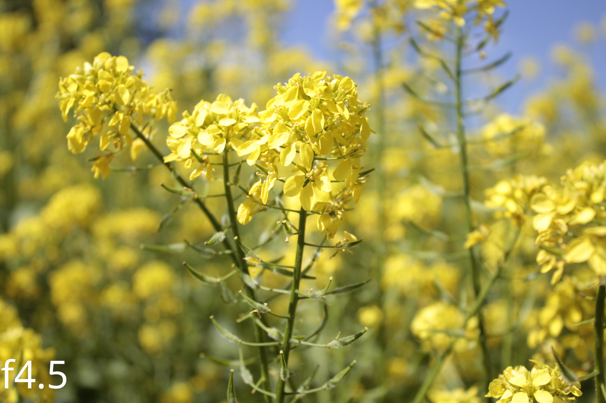
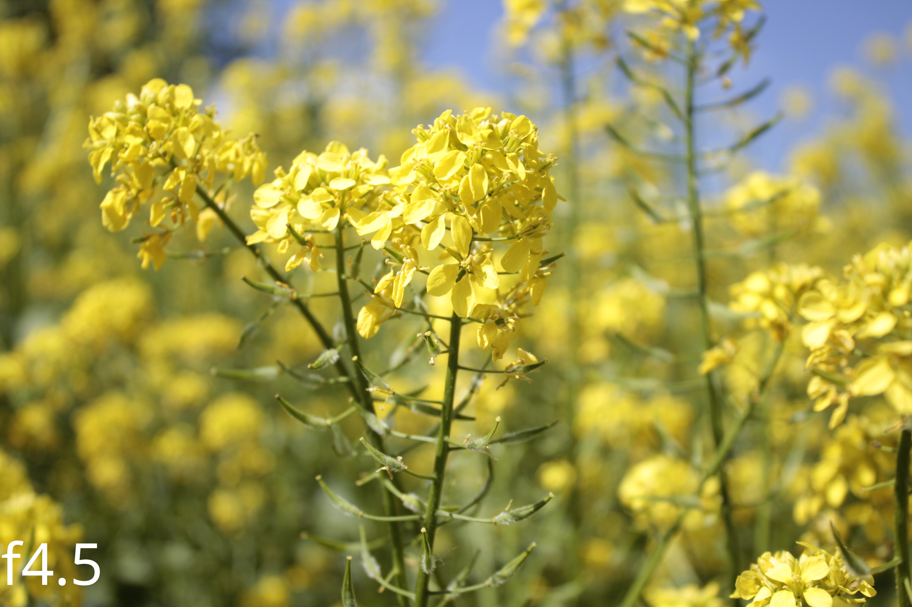

Principiul de funcționare
Imaginile reprezintă o schiță generală a elementelor optice ale unui aparat de fotografiat DSLR. Părțile principale sunt: grupul de lentile, senzorul, obturatorul, ampetura, oglinda, pentaprisma și vizorul. Pentru camerele "Mirrorless", așa cum sugerează numele, vizorul și oglinzile lui sunt înlocuite de un vizor digital.
Aceste caracteristici duc la prețurile ridicate ale aparatelor foto, cu modele entry-level la peste 2000 de lei și cele high-end de la $8000 și mai sus, dar acestea oferă o varietate de reglaje care nu pot fi obținute la camerele din telefoanele mobile.
Camerele cu lentile mai simple, cum ar fi cele din telefoane, nu pot regla magnificarea sau ampetura, cea ce scade versatilitatea, dar și din costul.
Rolul fiecărui element:
-Lentilele au rolul de a orienta razele de lumină pentru a forma o imagine pe senzor. Imaginea este reală, răsturnată și mai mică decât obiectul. Putem ajusta distanța dintre anumite lentile pentru a ajusta punctul focal sau magnificarea.
-Senzorul are rolul de a detecta lumina și de a trimite informațiile procesorului de imagini.
-Obturatorul împiedică lumina să atingă senzorul, și se mișcă atunci când facem o poză. Dacă lăsăm obturatorul deschis pentru o perioadă scurtă, cum ar fi 1/1000 s, imaginea va fi întunecată, și obiectele în mișcare vor apărea clare în poze. La durate mai lungi, cum ar fi 1/10s sau mai sus, chiar și ore, imaginile vor fi mai luminoase dar obiectele în mișcare vor arăta foarte neclare.
-Oglinda reflectă lumina din fața senzorului spre pentaprismă, și se ridică atunci când facem o poză.
-Pentaprisma întoarce și reflectă lumina de la oglindă spre vizor, care ne permite să observăm dacă imaginea este clară înainte de a face poza.
-Ampetura stă între lentre lentilă și senzor. Acesta lasă să atingă senzorul doar lumina care trece la mai puțin de o anumită distanță de mijlocul lentilei. Cu atât ampetura este mai închisă, imaginea va fi mai întunecată, și obiectele din afara punctului focal vor părea mai clare și viceversa. Un număr f mai mare înseamnă o ampetura mai mică și invers.2
Efectul acestei setări se poate observa clar în pozele de mai jos:
 

În poza din stânga se poate observa că subiectul, floarea de muștar din mijlocul imagiinii, nu iese în evidență, sșa că poza pare prea încărcată, fără vreun subiect anume, în timp ce în poza cu ampetură mare, subiectul iese în evidență.